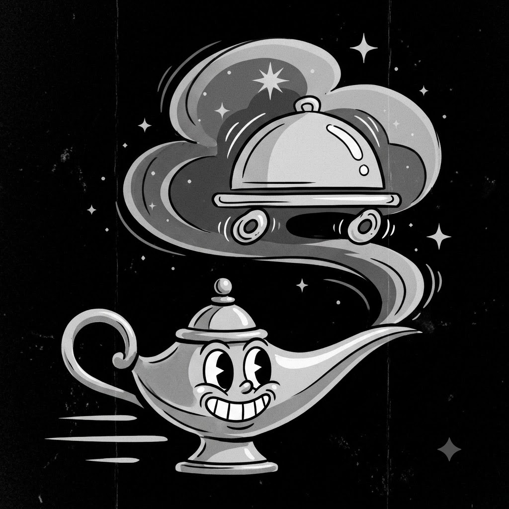

-
Acerca de la App
-
Nombre de la App FastFood
-
Versión 1.0.0
-
Descripción
Esta es una aplicación de pedidos de comida rápida desarrollada como proyecto para la materia de Programación Avanzada. Permite a los usuarios ver un menú de platillos, registrar nuevos productos y generar pedidos especificando su ubicación.
-
Soporte y Contacto send